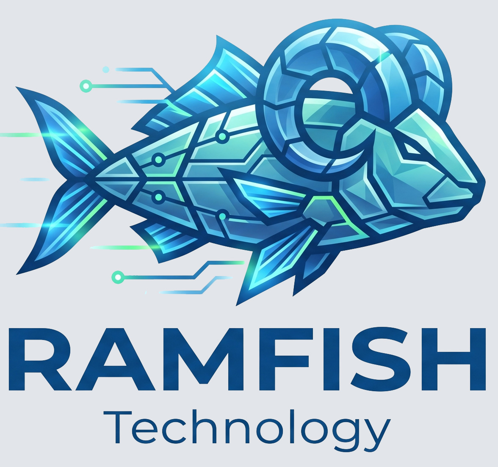
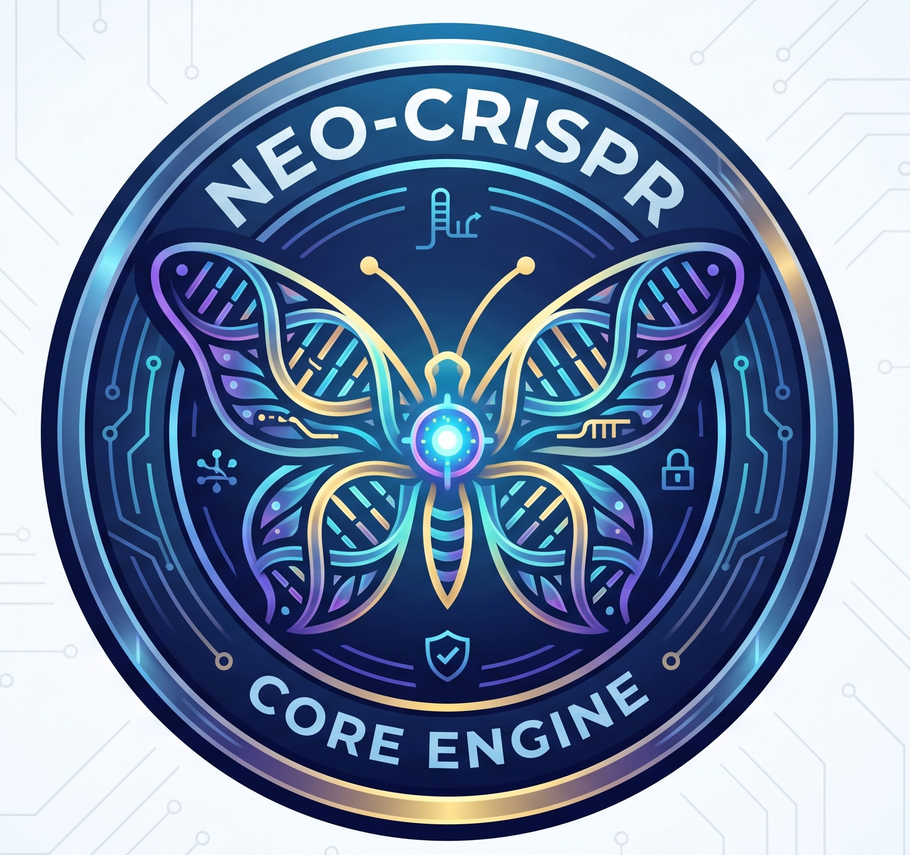
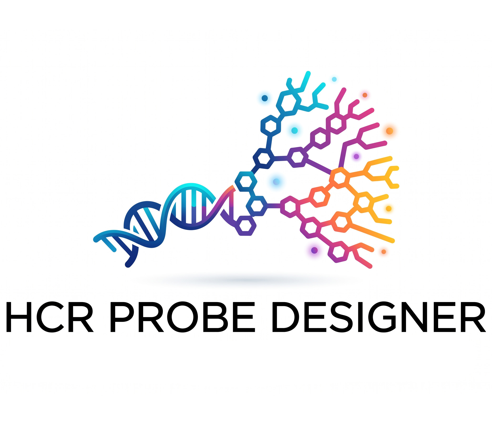
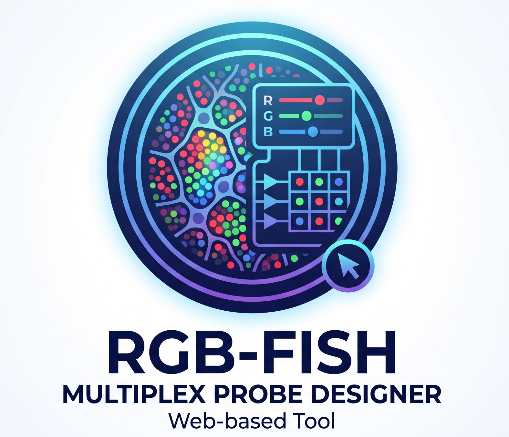
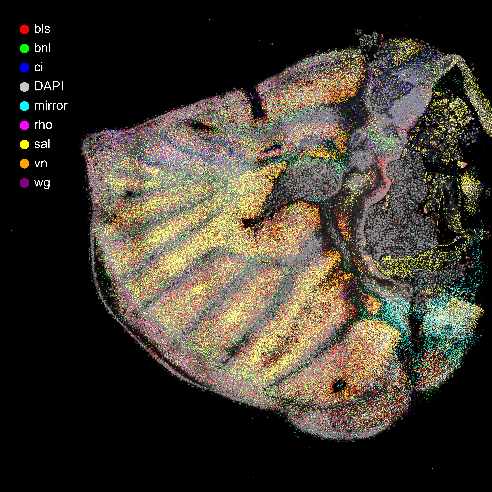
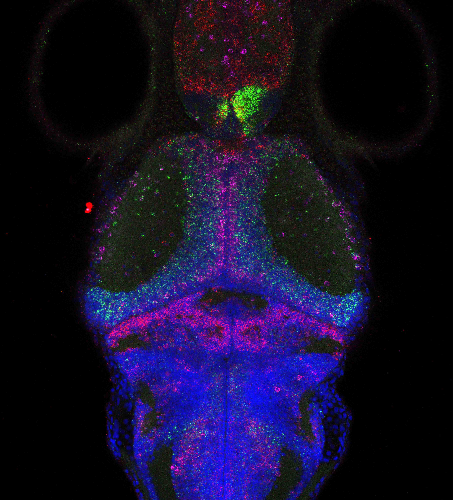

Web-based tools and computational software suites.

A comprehensive computational pipeline for multiplexed spatial biology. Handles signal normalization, image alignment, and LoG-based single-spot counting to generate accurate RNA profiles.

A dedicated computational tool and repository designed to facilitate and analyze precise CRISPR-based genome editing experiments.

A web-based tool for designing Hybridization Chain Reaction (HCR) probes. The app automates probe generation, amplifier selection, and sequence formatting for multiplexed spatial transcriptomics experiments.

A web-based tool for designing RGB style probes for detection of upto 6 genes using 3 amplifiers. This app helps you design probes for channel combinations for multiplexed spatial gene expression patterns.

A client-side web application for merging up to 30 single-channel RNAFISH images. Instantly generate highly multiplexed spatial composites with interactive controls for background thresholding, gamma correction, and dynamic legends.

A cloud-connected spatial biology tool for non-rigid image registration. It utilizes a B-Spline deformation framework to mathematically correct micro-scale tissue shifting, swelling, or mechanical warping across consecutive multiplexed RAM-FISH hybridization rounds.